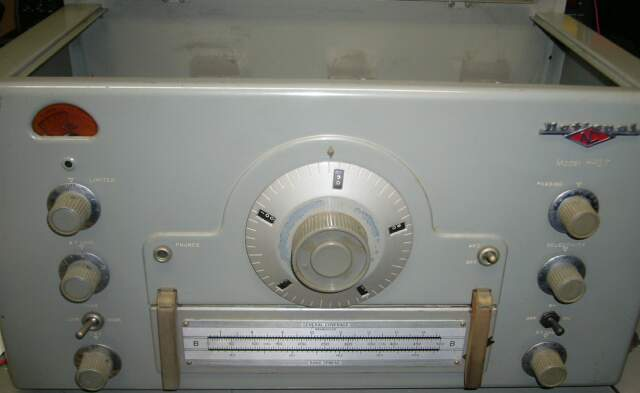
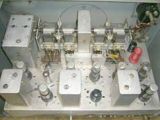
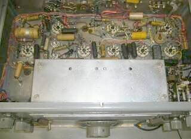
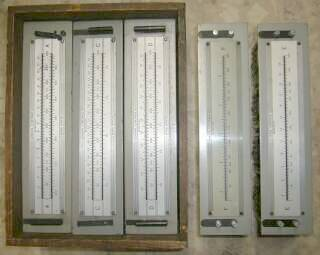
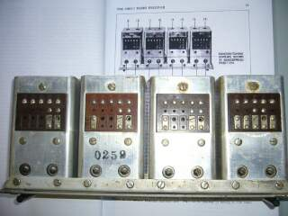

あの高名なＨＲＯです
この時代は、無線機メーカー ＝ 優秀なＶＣ（バリコン）・コイルメーカーと言っても過言ではないかも |
|

ﾘｱﾊﾟﾈﾙと蓋／一体ものを外して写しています |
この時代で、これだけの性能が得られた・・・ある面メカの勝利みたいなところがあります
Hi-Qプラグイン方式のRFコイル、また見るからにQの高そうなIFT そして頑強なメカニズム
ちょっとやそっとの技術では、とても作れそうな代物ではありません
持ち歩くラジオが作りたいからトランジスタを作ったというＳＯＮＹではありませんが､必要とするものを部品レベルから作り上げたものです（ものづくりの原点を見るようです）
シングル・スーパーへテロダイン方式で、各バンドごとのコイルパックを使って､そのバンド巾いっぱいを展開して受信します
この時代ですから、受信モードは、ＡＭとＣＷです
コリンズ方式のダブル・スーパーへテロダイン方式が一般化する前の「雄」かと思います |
|
 |
底面から
整然と配線がなされています
（底パネルが付いていませんでした）
構成は、
ＲＦ２段 ＩＦ２段 のシングル・コンバージョン
ＩＦは、４５６ＫＨｚ
ＭＴ管は、局発の６Ｃ４とスタビロＯＡ２のみで
その他は､全てＧＴ管です（全１２球）
電源は､外部供給で内蔵ではありません
６．３Ｖ ３．３Ａ
２４０Ｖ １００ｍＡ 程度の電源が必要に |
|
 |
コイル・パックは、Ａ～Ｆまで全て揃っています（Ｂは、本体に刺さっています）
Ｃバンドの例
受信可能範囲は、３．５～７．３ＭＨｚ
スプレッドは、７．０～７．３ＭＨｚ
このようにアマチュアバンド(周辺）をスプレッドして受信できるようになっています(コイル・パックに切替接点の用意があります）
| |
ＧＥＮＥＲＡＬ |
ＳＰＲＥＡＤ |
| Ａ |
１４．０～３０ＭＨｚ |
２７．０～３０．０ＭＨｚ |
| Ｂ |
７．０～１４．４ＭＨｚ |
１４．０～１４．４ＭＨｚ |
| Ｃ |
３．５～７．３ＭＨｚ |
７．０～７．３ＭＨｚ |
| Ｄ |
１．７～４．０ＭＨｚ |
３．５～４．０ＭＨｚ |
| Ｅ |
９００～２０５０ＫＨｚ |
－ － |
| Ｆ |
４８０～９６０ＫＨｚ |
－ － |
周波数の読み取りは、ダイヤルから換算します
選択度の向上に､シングル・クリスタル・フィルタ／フェーズタイプが用いられています（２００Ｈｚまで帯域が狭められると取説には書かれています）
左写真は､コイルパックの上面です
取説によると
長波 Ｇ：１８０～４３０ＫＨｚ
Ｈ：１００～２００ＫＨｚ
Ｊ：５０～１００ＫＨｚ
のコイルパックもあるようです
２１ＭＨｚ帯のスプレッドがないのが当時でしょうか？ |
 |